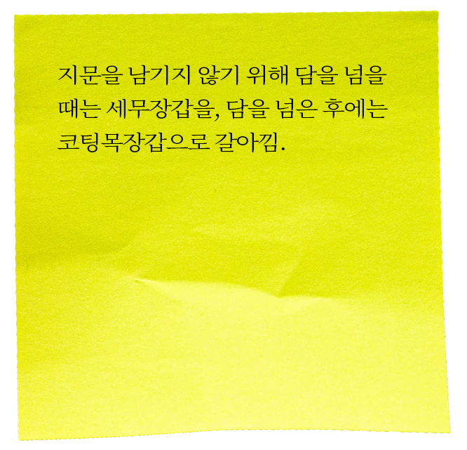
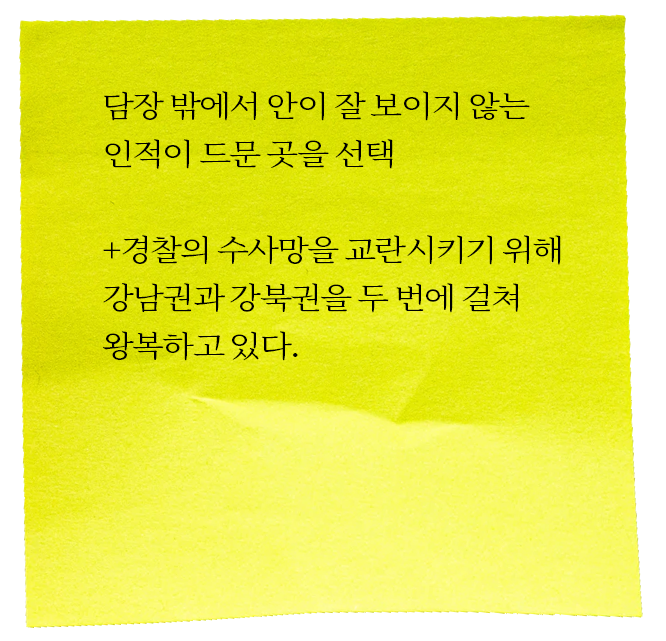
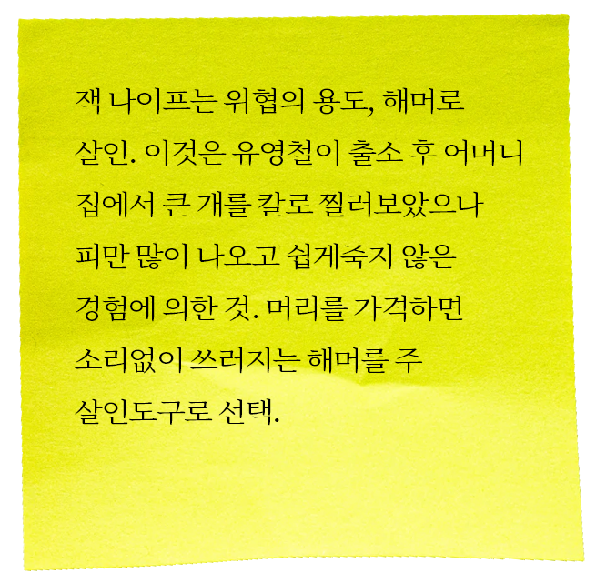
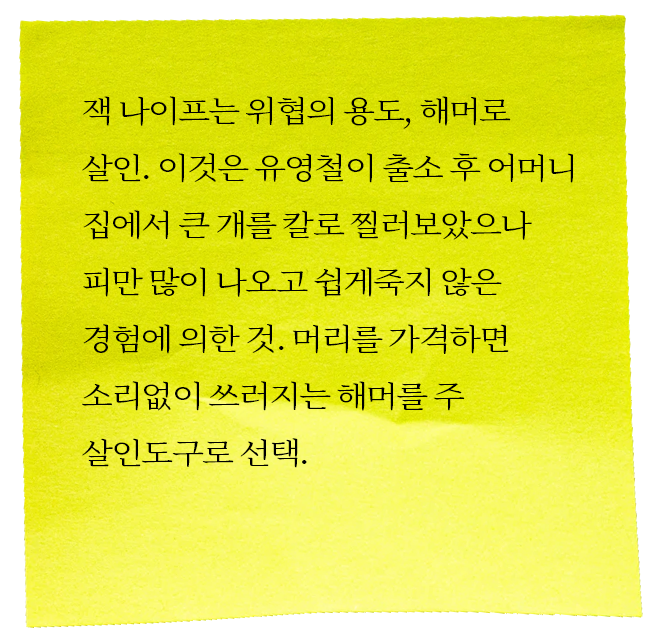

#1 부유층 노인 살인사건

name. 신사동 사건
date. 2003년 09월 24일
place. 서울 강남구 신사동
victims. 이모씨 부부(남 72세, 여 68세)
유영철은 세무장갑을 끼고 뒤편 담장을 넘어 정원으로 침입한 후 코팅 목장갑으로 갈아 끼고 잭나이프를 든 채 현관문을 열고 출입. 안방 인기척 확인 후 나머지 방들의 문을 여러 사람이 아무도 없음을 확인. 이 후 안방문을 열고 이모씨를 잭나이프로 목을 찔러 쓰러뜨린 후 해머로 재빨리 바꿔 머리를 수회 내려침. 옆에 있던 이모씨의 부인이 장롱에 있는 돈을 꺼내주려 하자 유영철은 “내가 돈 때문에 그런 것 같으냐”라고 하며 해머로 이모씨 부인의 머리 역시 수회 내려쳐 쓰러뜨리고 그때까지 살아 움직이던 이모씨의 머리를 해머로 재차 내리쳐 피해자들을 사망에 이르게 함.
살인 후 지문이나 발자국이 묻었을 가능성이 있는 곳은 치밀하게 닦고 현관문 잠금 장치를 눌러 닫은 후 나왔지만 잭나이프를 두고 왔다는 것을 떠올린 후 다시 담을 넘어 들어가 문고리를 부수고 잭나이프를 들고 나옴.

 
